BenvenutiWelcome
“I suoni di una volta”“The sounds of yesteryear”
L'Officina della Tammorra è una bottega artigiana nel cuore di Napoli, a due passi da Spaccanapoli, dove nascono tammorre, tamburelli e strumenti della tradizione popolare napoletana, costruiti e dipinti interamente a mano.
Ogni pezzo è unico: legno, pelle e sonagli si uniscono ai colori del Golfo, del Vesuvio e delle maschere della nostra terra.
Officina della Tammorra is an artisan workshop in the heart of Naples, just off Spaccanapoli, where tammorre, tambourines and the instruments of Neapolitan folk tradition are built and painted entirely by hand.
Every piece is unique: wood, skin and jingles come together with the colours of the Gulf, of Vesuvius and of the masks of our land.
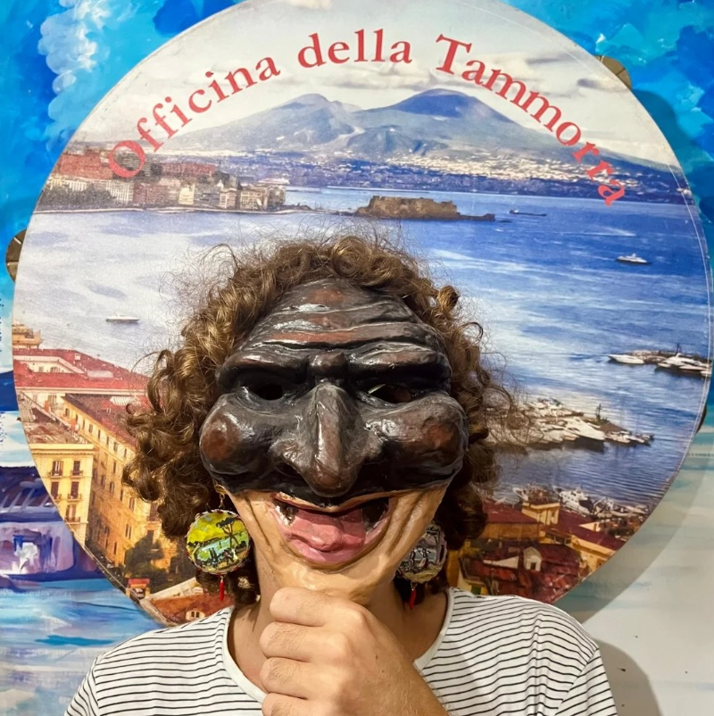
StoriaHistory
Le origini della tammorriata si perdono nella notte dei tempi; essa è senza dubbio una delle più sensuali e seducenti forme di ballo ed affonda le sue origini nelle antiche danze greche e, probabilmente, nelle antiche danze delle genti campane, come i sanniti.
Per nostra fortuna e nonostante i secoli trascorsi la tammorriata ha mantenuto i tratti fondamentali delle antiche danze, continuando a rappresentare i riti della sessualità e della fertilità connessi alla terra intesa come madre di ogni cosa e, quindi, fonte della vita.
The origins of the tammorriata are lost in the mists of time. It is without doubt one of the most sensual and seductive forms of dance, rooted in the dances of ancient Greece and, probably, in those of the ancient peoples of Campania, such as the Samnites.
Fortunately, despite the passing centuries, the tammorriata has kept the essential features of those ancient dances, still representing the rites of sexuality and fertility tied to the earth, seen as the mother of all things and therefore the source of life.
Le originiThe origins
Nel mondo greco, la danza veniva considerata dono degli dei agli uomini e mezzo per questi di accostarsi alla divinità fino ad identificarsi con essa, unico modo per raggiungere, almeno idealmente, l'immortalità. Il dono del movimento del corpo era quasi sempre una vera e propria pantomima che rappresentava miti e celebrazioni di figure divine e mitologiche. In quel tempo i danzatori ellenici si muovevano con gesti corporei strettamente collegati alla voce ed alla musica per il raggiungimento dell'ebbrezza terrena.
In the Greek world, dance was considered a gift from the gods to mankind and a means for people to approach the divine until they became one with it – the only way to reach, at least ideally, immortality. The gift of bodily movement was almost always a true pantomime, representing myths and celebrating divine and mythological figures. Hellenic dancers moved with gestures closely bound to voice and music, seeking earthly ecstasy.
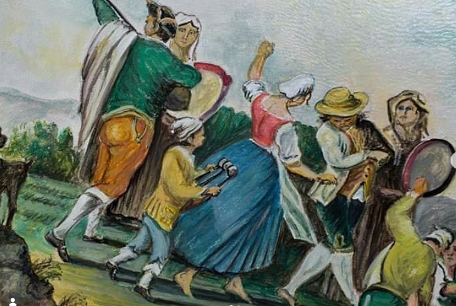
Con la nascita del teatro greco, a partire dal V secolo avanti Cristo, queste danze furono schematizzate affinché entrassero a far parte delle sue rappresentazioni. Alcune di queste antiche danze, appartenenti o no al teatro, presentavano gesti caratteristici che si ripropongono nella figurazione tematica dell'odierno ballo su tammorra; questi sono testimoniati da citazioni letterarie, dipinti, raffigurazioni su vasi, da un'infinità di sculture e bassorilievi disseminati in vari musei del mondo.
Quelli riproposti nell'odierna danza campana sono soprattutto due: il primo è la cheironomia, cioè la posizione assunta dalle mani nel corso del ballo, molto importante poiché attraverso di essa si esplicitano particolari sentimenti ed emozioni; il secondo gesto è il saltare di tipo demoniaco che agita tutto il corpo. Entrambi questi movimenti erano eseguiti dai satiri, adoratori del culto di Dioniso e Cibele. La danza dei satiri descritta, probabile antenata della nostra tammorriata, si chiama sìkinnis, e si ballava nel naos, il tempio divino.
Continuando la storia delle antichissime origini del nostro ballo, possiamo ancora osservare che le danze bacchiche sostituirono, più tardi, in Grecia la sìkinnis. Queste nuove danze, sempre in onore del dio Dioniso, erano costituite dalla elevazione ritmica delle braccia, da piccoli passi e dall'agitazione di tutto il corpo. Tutti questi movimenti servivano alle baccanti ed alle sacerdotesse del dio per giungere a furore erotico.
La danza delle baccanti o menadi, cioè delle donne seguaci di Dioniso, era detta turbé, una danza fortemente oscena eseguita di solito durante i riti auspicanti fecondità. Nella schematizzazione della danza dionisiaca confluì anche la gestualità della pirrica greca, anch'essa presente, seppure travisata, anche in alcuni tipi di tammorriata. Le danze pirriche erano di carattere giocoso, ma anche guerresco e venivano eseguite da un'amazzone armata di lancia e di un piccolo scudo ed anche da un sileno che le protendeva la tipica pelle di daino, propria dei cultori di Dioniso. Nello stesso tempo, però, i satiri parodiavano mimicamente la mancanza di coraggio dei cultori della vita agreste ed in alcuni casi sembrano danzare in preda alla più accesa paura: cadono in ginocchio e stendono un braccio come se tentassero di allontanare un oggetto abominevole, oppure, sempre in ginocchio, poggiano la mano destra in terra e la sinistra sulla testa. Una splendida decorazione pittorica su di un vaso conservato nel Museo Archeologico Nazionale di Napoli raffigura due satiri che attorniano, danzando, un kelebe colmo di vino, inginocchiandosi e volteggiando con le gambe sino ad arrivare ad incastrarle. Tutte queste movenze satiriche sono riscontrabili in atteggiamenti coreutici della tammurriata campana.
Un'altra danza rituale greca, eseguita dai giovani durante la vendemmia e caratterizzata anch'essa da un'azione mimica, è detta epilenios; il suo movimento gioioso ed estatico, cadenzato dal ritmo della cetra e dal suono delicato delle tibie, si può rilevare in alcune movenze tammorrare. Con questa ritualità mimetica sono rappresentate tutte le azioni svolte dai vignaioli durante il periodo della vendemmia. Tra le danze allegre appartenenti al genere teatrale, bisogna ricordare soprattutto la kordax; quest'ultima appartiene al genere della commedia greca di tipo orgiastico ed è caratterizzata da movimenti eccitanti, in particolare dal movimento turpe dei fianchi.
Altro importante elemento di questo tipo di danze rituali è il luogo dove si svolgono. Per i popoli antichi era lo spazio antistante il tempio del dio, oggi, in una ideale continuità con il paganesimo, il sagrato o la piazza antistante la chiesa della Madonna o del santo.
With the birth of Greek theatre, from the 5th century BC, these dances were codified so that they could become part of its performances. Some of these ancient dances, whether theatrical or not, featured characteristic gestures that reappear in today's dance to the tammorra. They are documented in literary sources, paintings, vase decorations and countless sculptures and bas-reliefs scattered across the museums of the world.
Two of them above all survive in today's Campanian dance. The first is cheironomia, the position of the hands during the dance, which is very important because it expresses particular feelings and emotions; the second is a frenzied, “demonic” leap that shakes the whole body. Both movements were performed by satyrs, devotees of the cult of Dionysus and Cybele. This satyr dance, the likely ancestor of our tammorriata, was called sìkinnis and was danced in the naos, the sacred temple.
Continuing the story of our dance's ancient origins, we see that in Greece the sìkinnis was later replaced by the Bacchic dances. These new dances, still in honour of Dionysus, consisted of rhythmically raised arms, small steps and the shaking of the whole body. All of these movements helped the bacchantes and priestesses of the god reach an erotic frenzy.
The dance of the bacchantes, or maenads – the female followers of Dionysus – was called turbé, a strongly obscene dance usually performed during fertility rites. The gestures of the Greek pyrrhic dance also flowed into the Dionysian dance, and they too survive, albeit transformed, in some types of tammorriata. Pyrrhic dances were playful but also warlike, performed by an Amazon armed with a spear and a small shield, and by a silenus holding out to her the fawn skin typical of the followers of Dionysus. At the same time the satyrs mimed and mocked the lack of courage of country folk, at times appearing to dance in the grip of terror: they fall to their knees and stretch out an arm as if to push away something abominable, or, still kneeling, place the right hand on the ground and the left on their head. A splendid painted vase in the National Archaeological Museum of Naples shows two satyrs dancing around a kelebe full of wine, kneeling and twirling their legs until they interlock. All of these satyric movements can be found in the choreography of the Campanian tammurriata.
Another Greek ritual dance, performed by young people during the grape harvest and also mimetic in character, was the epilenios. Its joyful, ecstatic movement, marked by the rhythm of the lyre and the gentle sound of the pipes, can be recognised in some tammorra steps. Through this mimetic ritual all the tasks of the vine-growers during the harvest were represented. Among the merry theatrical dances, the kordax deserves special mention: it belonged to orgiastic Greek comedy and was characterised by provocative movements, especially a lewd swaying of the hips.
Another important element of these ritual dances is the place where they are held. For ancient peoples it was the space in front of the god's temple; today, in ideal continuity with paganism, it is the churchyard or the square in front of the church of the Madonna or the patron saint.
Il balloThe dance
La tammurriata è una danza a coppia, ed esprime rappresentazioni rituali che non riguardano mai il quotidiano, quanto, piuttosto, tutto ciò che il quotidiano nega e reprime. Non deve, quindi, essere associata alla tradizionale danza d'amore, cosa che invece può rappresentare la tarantella. Il ballo r' 'e campagnole, ossia il ballo dei contadini, è costituito da una gestualità ritualizzata che, nel momento collettivo, assume un significato simbolico e magico. I suoi gesti possono essere spontanei, derivati da gesti che si effettuano durante il lavoro quotidiano nei campi o in casa, come setacciare la farina o spezzare i maccheroni, oppure imitazioni degli atteggiamenti degli animali come il volo degli uccelli e le gestualità tipiche dei gallinacei.
Quando la musica comincia a scandire il suo tempo, tra i potenziali ballatori, attraverso un gioco di sguardi avviene la ricerca del partner, poi l'incontro tra i due ed, infine, la formazione della coppia di ballerini. Nella prima fase del ballo sembra che i due danzatori cerchino la giusta intesa tra loro ed assaporino bene il ritmo della tammorra, sul quale poggia anche il canto, e ballando, cominciano anche a saggiare il loro rapporto con lo spazio. In questo momento di ricerca i due esprimono la loro volontà psicologica di possedere un proprio spazio entro cui agire protetti sia dalla barriera che si è venuta a creare tra la coppia sia da quella formata dagli astanti i quali, a loro volta, sono sempre dei potenziali partecipanti alla danza stessa visto che potrebbero intervenire in ogni istante. Durante l'esecuzione della tammurriata, infatti, non esistono attori e spettatori, non vi sono barriere tra i partecipanti alla festa, né esistono palcoscenici, ma si formano spontaneamente dei cerchi con tutti i presenti all'interno dei quali si fondono, in un tutt'uno, suonatori, cantatori e spettatori.
Il cerchio simboleggia la volontà umana di sfuggire il tempo canonico, si tenta, attraverso di esso, di fermarlo almeno per quel momento di festa donato alla divinità. Il duro vivere quotidiano viene così dimenticato ed esorcizzato. Il cerchio formato dagli spettatori serve a potenziare le energie umane dei partecipanti alla tammurriata; nel suo interno la danza si svolge regolarmente sempre sulla ritmica dello schioccare delle castagnette, tenute in mano un po' da tutti tra gli sguardi fissi e reciproci dei ballatori. In alcuni momenti di spontaneo eccitamento, però, la frase musicale che segue la scansione ritmica dei versi del cantatore, tende a stringere gli accenti; in questo momento uno dei due danzatori comincia ad assumere un ruolo aggressivo di evidente atteggiamento amoroso o di sfida, assecondato o scacciato dall'altro. Quest'ultimo può allora indietreggiare, perché incalzato dal compagno o dalla compagna, oppure decidere di accettare il corteggiamento o il duello.
Questa fase del ballo è la più coinvolgente e frenetica ed è chiamata rotella o vutata. La vutata è dunque il simbolo della sfida o dell'accoppiamento, ma può risultare da parte della donna un rifiuto dell'uomo che la sta corteggiando; la coppia, allora, si può spezzare ed in questo momento può entrare, per formare una nuova coppia, un altro personaggio, come nuovo potenziale corteggiatore. In questa fase si modificano anche la ritmica e la parte cantata, infatti la tammorra batte in uno, il cantante canta su una nota sola molto prolungata, o aggiunge dei versi più brevi per seguire i due danzatori che girano su loro stessi quasi incatenati. In questo momento della vutata si assiste alla totale liberazione ed allo sblocco di tutte le tensioni muscolari. Nella girata l'andamento della danza, nella maggior parte dei casi, è antiorario.
Non c'è limite di tempo alla danza se non quello di sfinire, raggiungere, con la perdita della coscienza, l'acme che dischiude nuovi orizzonti prima sconosciuti. Il ballo non è soltanto frenesia, e neanche semplice stato di ebbrezza, ma è puro invasamento divino. Non esiste scuola per imparare questo ballo, ma solo iniziazione; quando si è ragazzi si comincia a ballare con gli anziani ed allora bisogna solo seguire i passi senza prendere l'iniziativa. Seguire lo sguardo di colui che guida è importantissimo, soltanto guardandosi sempre negli occhi si può entrare perfettamente in sintonia.
The tammurriata is a couple dance expressing ritual representations that never concern everyday life but, rather, everything that everyday life denies and represses. It should not, therefore, be thought of as a traditional love dance, which the tarantella may instead be. The ballo r' 'e campagnole – the peasants' dance – is made of ritualised gestures that, in the collective moment, take on a symbolic and magical meaning. Its gestures may be spontaneous, drawn from everyday work in the fields or at home, such as sifting flour or breaking macaroni, or they may imitate animals, like the flight of birds or the typical movements of hens.
When the music begins to beat time, the would-be dancers look for a partner through an exchange of glances; then the two meet and the couple is formed. In the first phase the dancers seem to seek the right understanding between them and to savour the rhythm of the tammorra, on which the singing also rests; as they dance, they begin to test their relationship with the space around them. In this moment of searching they express a psychological need for a space of their own, protected both by the bond between them and by the ring of onlookers – who are themselves always potential dancers, since they may step in at any moment. In the tammurriata there are no performers and no audience, no barriers between those at the feast and no stage: circles form spontaneously, in which players, singers and onlookers merge into one.
The circle symbolises the human wish to escape ordinary time – to stop it, at least for the moment of the feast offered to the divinity. The hardships of daily life are thus forgotten and exorcised. The circle of onlookers amplifies the energy of those taking part; within it the dance flows to the clicking of the castanets, held by almost everyone, while the dancers keep their eyes fixed on one another. At moments of spontaneous excitement, however, the musical phrase that follows the singer's verses tightens its accents; one of the dancers then takes on an assertive role, plainly amorous or challenging, which the other either welcomes or rejects. The latter may step back, pressed by their partner, or decide to accept the courtship or the duel.
This most engaging and frenzied phase of the dance is called the rotella or vutata. The vutata is thus the symbol of challenge or of union, but it may also express the woman's rejection of the man courting her; the couple may then break up and another dancer may step in as a new suitor. In this phase the rhythm and singing change too: the tammorra beats on one, the singer holds a single long note or adds shorter verses to follow the two dancers, who spin around almost chained together. The vutata brings total release and the loosening of every muscular tension. In most cases the turn is anticlockwise.
The dance has no time limit other than exhaustion – reaching, with the loss of consciousness, the climax that opens up new, unknown horizons. The dance is not just frenzy, nor simple intoxication: it is pure divine possession. There is no school for learning it, only initiation; as youngsters, people begin dancing with their elders and must simply follow their steps without taking the lead. Following the gaze of whoever leads is essential: only by always looking each other in the eye can dancers be perfectly in tune.
Le variantiLocal styles
La tammorriata descritta sino ad ora ha delle caratteristiche ben precise, ma vi sono delle differenze a seconda dei luoghi dove si balla; vicino al mare ed in pianura, ad esempio, la danza è stata sempre considerata un avvicinamento sensuale ed amoroso, mentre tra le montagne la necessità di conquistare le vallate le ha conferito delle caratteristiche più dure e scattanti, quasi guerresche. La tammorriata scafatese è certamente la più ballata ed il suo fine è essenzialmente di natura sensuale; la paganese è più saltellante rispetto alla prima; i ballerini presentano minori momenti di attaccamento e la stessa vutata mantiene i ballerini distaccati. In questo tipo di tammorriata, che si può osservare a Pagani e nei paesi limitrofi, il corteggiamento sembra lasciare il posto ad una sfida tra i ballatori. Un terzo tipo di tammorriata è la giuglianese; la sua caratteristica principale è costituita dalla presenza del doppio flauto, del tamburello e dello scacciapensieri; il ritmo (il sisco), inoltre, è più veloce, quasi ossessivo.
L'ultimo modo di ballare che prendiamo in considerazione è quello dell'Avvocata, in onore della Madonna dell'Avvocata. La sua caratteristica fondamentale è nella presenza di un numero elevato di tammorre suonate contemporaneamente che può arrivare sino a dieci. C'è una tammorra principale che guida il tempo e, insieme alla voce, dà il numero dei colpi della vutata secondo il testo delle barzellette intonate. Qui la musica e i movimenti sono veri e propri richiami guerreschi, incitamento agli uomini nei momenti di combattimento.
The tammorriata described so far has well-defined features, but it varies from place to place. Near the sea and on the plains it has always been a sensual, amorous approach, while in the mountains the need to conquer the valleys gave it a harder, sharper, almost warlike character. The Scafati style is certainly the most widely danced and is essentially sensual; the Pagani style is bouncier, with fewer moments of closeness, and even the vutata keeps the dancers apart – here, in Pagani and nearby towns, courtship seems to give way to a contest between the dancers. A third style is the Giugliano tammorriata, distinguished by the double flute, the tambourine and the jaw harp; its rhythm (the sisco) is faster, almost obsessive.
The last style we consider is that of the Avvocata, in honour of the Madonna dell'Avvocata. Its key feature is the large number of tammorre played together – up to ten. A lead tammorra keeps time and, together with the voice, calls the number of beats of the vutata according to the lyrics of the barzellette being sung. Here the music and movements are true war cries, urging men on in moments of battle.
StrumentiInstruments
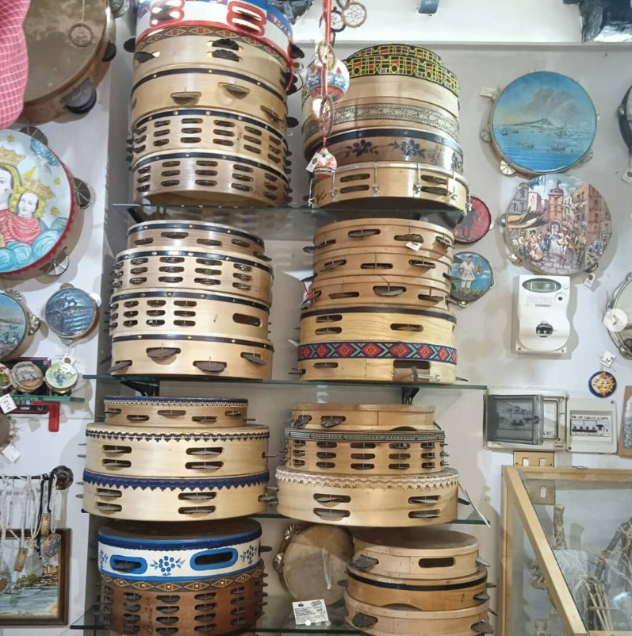
La tammorraThe tammorra
Viene detta anche tammurro; è un grosso tamburo a cornice con la membrana di pelle seccata di un animale (quasi sempre capra o pecora) tesa su telaio circolare di legno al quale sono fissati, a coppie, dischetti di metallo detti “cicere” oppure “cimbale”. Il suo diametro è in genere compreso tra i 35 e i 65 centimetri.
Il telaio sopra il quale è stesa la pelle viene impugnato dal basso dalla mano sinistra, mentre la destra la percuote ritmicamente. Il modo di impugnare la tammorra è importante anche da un punto di vista rituale: quando lo strumento è impugnato con la mano sinistra e percosso con la destra si dice che viene suonato nella maniera “maschile”. All'opposto, invece, si dice che viene suonato nella maniera “femminile”, e ciò perché il lato destro è identificato nelle antiche culture con l'idea dell'uomo, mentre il lato sinistro con l'idea della donna. L'inversione dell'impugnatura dello strumento indica un rovesciamento dei segni del rituale.
La tammorra accompagna sia il canto che il ballo tradizionale ed è usata da sola o con altri strumenti a percussione, quali le castagnette. La forma musicale, ad andamento essenzialmente binario, dallo strumento deriva il nome di “tammorriata” o anche di “canzone ’ncopp’ ’o tamburo”. A tale struttura ritmica corrisponde una particolare scansione metrica di sei versi di 11 sillabe, che durante il canto subisce però modifiche sia nel numero delle sillabe che nell'organizzazione.
Molto complessa è la tecnica usata per suonare questo strumento, poiché richiede qualità musicali e ritmiche non comuni accompagnate, inoltre, da una resistenza fisica notevole: lo strumento dev'essere spesso suonato per delle ore senza che il musicista possa cedere nella costanza del ritmo. Critica è, ad esempio, la posizione da tenere per equilibrare il peso dello strumento in modo da non affaticare eccessivamente il braccio. Non esiste, in proposito, una regola generale: ogni suonatore trova una sua maniera per equilibrarsi, costruendo una tecnica alla quale partecipa tutto il fisico.
La tammorra non va confusa con il tamburello napoletano, che è molto più piccolo e ha i cembali di ottone e non di latta.
Also called tammurro, it is a large frame drum: a dried animal skin (almost always goat or sheep) stretched over a circular wooden frame fitted with pairs of small metal discs called “cicere” or “cimbale”. Its diameter usually ranges from 35 to 65 centimetres.
The frame is held from below with the left hand while the right hand strikes the skin rhythmically. The way it is held also matters ritually: held in the left hand and struck with the right, it is said to be played the “male” way; the opposite is the “female” way, because in ancient cultures the right side was identified with man and the left with woman. Swapping hands signals a reversal of the ritual's signs.
The tammorra accompanies both traditional singing and dancing, alone or with other percussion such as castanets. The musical form, essentially in duple time, takes its name from the instrument – “tammorriata”, or “song on the drum”. This rhythm matches a particular metre of six eleven-syllable lines, which is however varied in syllable count and arrangement during the song.
Playing technique is very demanding: it requires uncommon musical and rhythmic skill as well as great stamina, since the instrument is often played for hours without the player ever losing a steady beat. Balancing the drum's weight so as not to tire the arm is crucial. There is no general rule: each player finds their own balance, developing a technique that involves the whole body.
The tammorra should not be confused with the Neapolitan tamburello, which is much smaller and has brass rather than tin jingles.
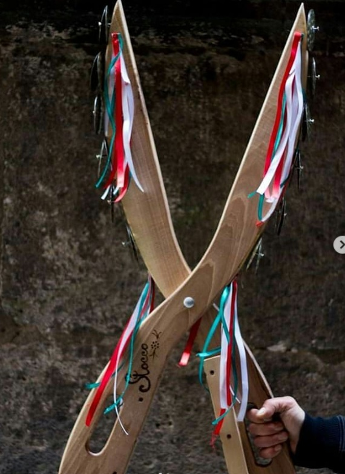
Il triccabballaccheThe triccabballacche
È composto da tre martelletti di legno fissati in basso in una base anch'essa di legno. Il martello centrale è fisso, mentre quelli laterali sono mobili ed incernierati alla base.
Lo strumento è suonato impugnando nelle due mani i martelli laterali mobili e battendoli ritmicamente contro quello centrale fisso.
It is made of three small wooden hammers fixed at the bottom to a wooden base. The central hammer is fixed, while the two side ones are hinged to the base and move freely.
It is played by holding the two movable side hammers and striking them rhythmically against the fixed central one.
Le castagnetteThe castagnette
Sono più conosciute con il nome di nacchere e costituiscono uno strumento ritmico formato da una coppia di piccoli elementi di legno tra loro simmetrici ed a forma di conchiglia, tenuti assieme da una cordicella. Chiusi, assumono la forma di una castagna da cui derivano, appunto, il nome.
Lo strumento è suonato da coloro che ballano la tammorriata ed anche per esse si distingue tra una castagnetta “maschio”, impugnata nella mano destra, e “femmina”, impugnata nella sinistra.
Better known as castanets, they are a rhythm instrument made of a pair of small, symmetrical, shell-shaped pieces of wood tied together with a cord. When closed they look like a chestnut (castagna), hence the name.
They are played by the tammorriata dancers themselves, and here too there is a “male” castanet held in the right hand and a “female” one in the left.
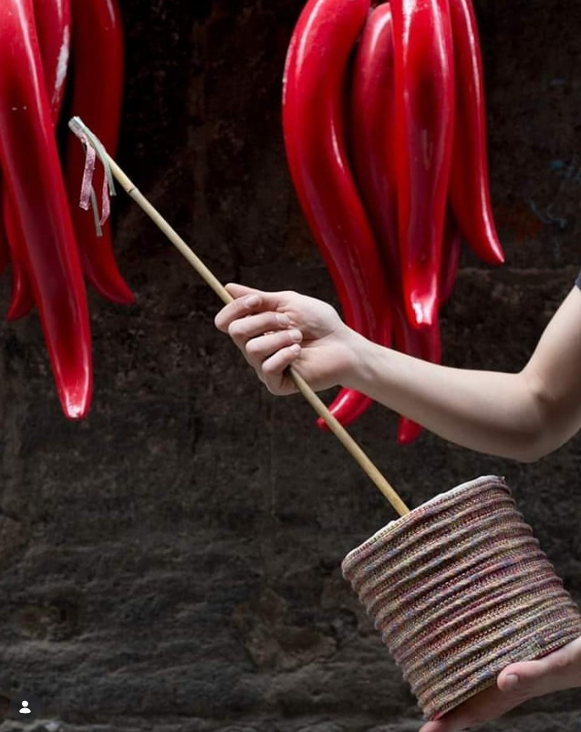
Il putipùThe putipù
È sicuramente lo strumento tradizionale napoletano più originale e divertente, in quanto produce un suono che ha il sapore di irriverenza.
Detto anche “caccavella”, è composto da una pentola di terracotta o da una vecchia scatola di latta tonda ricoperta da un lato di una pelle. Al centro di quest'ultima è legata l'estremità di una canna. Il suono è prodotto inumidendo la mano e facendola scorrere lungo la canna: lo sfregamento produce delle vibrazioni nella pelle che vengono amplificate nella sottostante pentola o scatola, che funge da cassa armonica.
Surely the most original and amusing Neapolitan folk instrument, with a sound that has a cheeky, irreverent flavour.
Also called “caccavella”, it is made of a terracotta pot or an old round tin covered on one side with skin, to whose centre the end of a reed is tied. It is played by wetting the hand and sliding it along the reed: the friction makes the skin vibrate, and the pot or tin below amplifies the sound like a soundbox.
CostruzioneHow we make them
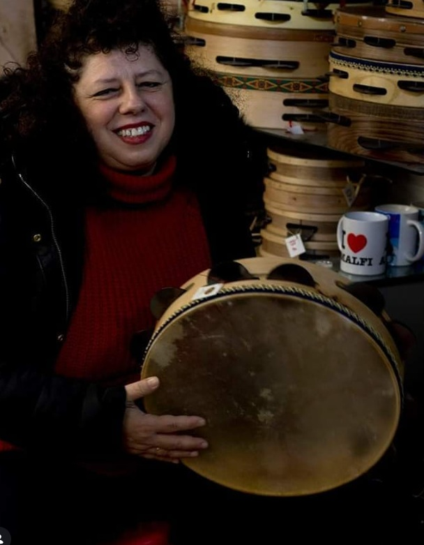
Il legnoThe wood
Il cerchio viene curvato e rifinito a mano, poi forato per accogliere i sonagli.
The frame is bent and finished by hand, then drilled to hold the jingles.
La pelleThe skin
La pelle naturale viene tesa sul cerchio per ottenere il suono pieno e profondo della tammorra.
Natural skin is stretched over the frame to give the tammorra its full, deep sound.
I sonagli e la pitturaJingles and painting
Le cicere di latta danno la voce allo strumento; la pittura a mano gli dà l'anima.
The tin “cicere” give the instrument its voice; hand painting gives it its soul.
Artigianato e pitturaCrafts and painting
Oltre agli strumenti, dipingiamo a mano tammorre decorative, orecchini e oggetti ispirati a Napoli e alle sue figure.
Besides instruments, we hand-paint decorative tammorre, earrings and objects inspired by Naples and its characters.
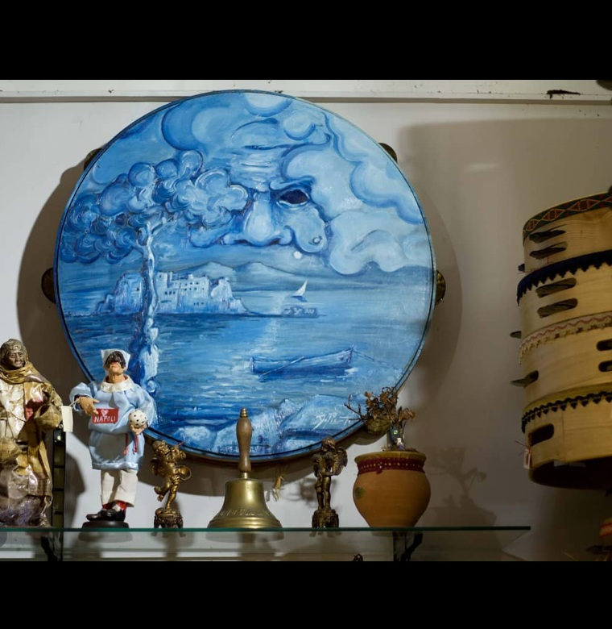
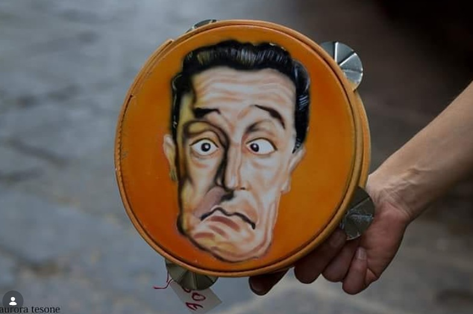
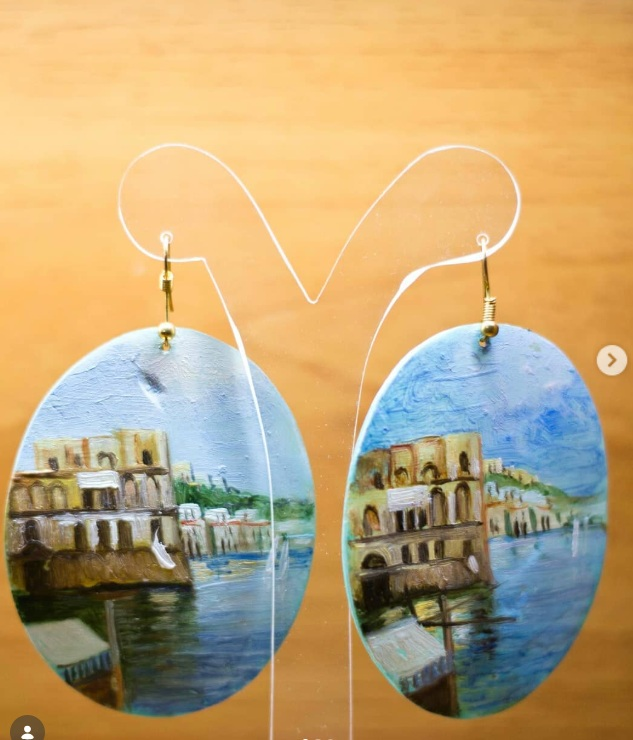
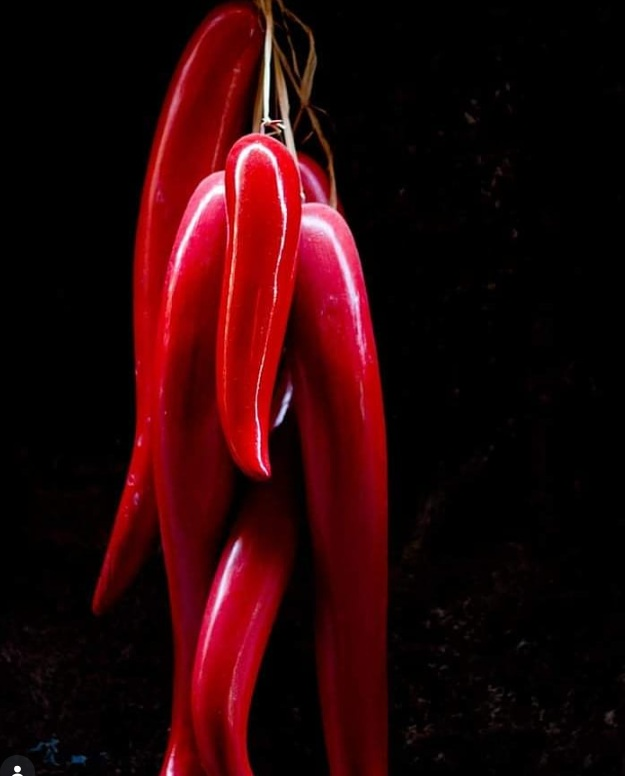
Dove siamoFind us
Il negozio si trova in Vico San Severino 39, una traversa di Spaccanapoli (Via San Biagio dei Librai).
Per raggiungerlo dalla Stazione Centrale si dovrà percorrere il Corso Umberto e poi svoltare a destra per Via Duomo. Giunti in Via Duomo, se si è a piedi, imboccare Spaccanapoli (Via San Biagio dei Librai) e poi Vico San Severino, come indicato nella mappa.
Se si è con l'auto sarà necessario parcheggiare su Via Duomo, poiché nella zona dove si trova il negozio non è consentita la circolazione delle autovetture.
The shop is at Vico San Severino 39, a side street of Spaccanapoli (Via San Biagio dei Librai).
From the Central Station, walk along Corso Umberto and turn right into Via Duomo. On foot, from Via Duomo take Spaccanapoli (Via San Biagio dei Librai) and then Vico San Severino, as shown on the map.
If you come by car, please park on Via Duomo: cars are not allowed in the area around the shop.
Dicono di noiWhat people say
Le recensioni su GoogleGoogle reviews
Leggi e lascia una recensione su GoogleRead and leave a review on Google
Tammurriata Workshop
Il C.T.S. (Centro Teatro Studi) di Napoli ha organizzato, nell'ambito di un progetto di collaborazione con il Sininen Verstas, un laboratorio di musica e danza della tammurriata e di costruzione dei tamburi tradizionali. Il laboratorio, coordinato da Paola Gargiulo con l'assistenza di Luisa Elena Mengoni (danza e tamburi), Antonio Aiese (voce e tamburi) e Massimo Fornuto (chitarra e tamburi), ha introdotto i partecipanti al contesto culturale della tammurriata e alle tecniche di base della danza, della percussione e della costruzione dei tamburi.
The C.T.S. (Centro Teatro Studi) of Naples has organized, within a collaborative project with the Sininen Verstas, a workshop on tammurriata music, dance and construction of traditional drums. The workshop, coordinated by Paola Gargiulo with the assistance of Luisa Elena Mengoni (dance and drums), Antonio Aiese (voice and drums) and Massimo Fornuto (guitar and drums), introduced the participants to the cultural background of tammurriata, as well as to the basic techniques of dancing, drumming and drums construction.
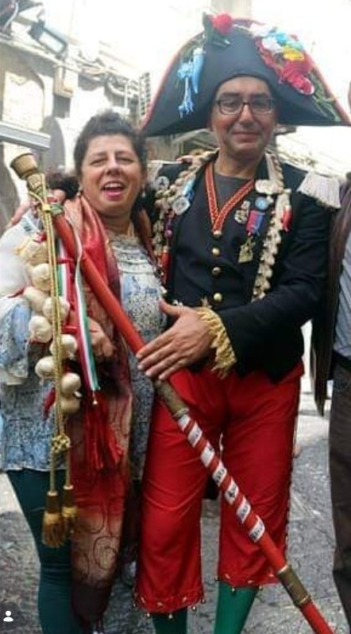
La “tammurriata” è un'espressione musicale ritmico-melodica della Campania, caratterizzata da una forma specifica di musica, canto e danza. Prende il nome dalla “tammorra”, un tamburo fatto di un telaio circolare di legno a cui sono fissati una pelle di capra e alcuni dischetti di metallo (cembali). L'origine della musica e della danza è ancora incerta, anche se alcuni dipinti di Pompei mostrano musicisti che suonano uno strumento molto simile alla tammorra o al più piccolo “tamburello”.
La tammurriata è ancora praticata in molti paesi intorno a Napoli e nell'area vesuviana durante le feste religiose, che si svolgono soprattutto dalla primavera fino ad agosto. Le date delle feste sono fissate in base al calendario pasquale e sono legate al culto della Vergine Maria nelle sue diverse manifestazioni: la Madonna dei Bagni a Scafati, la Madonna di Castello a Somma Vesuviana, la Madonna dell'Avvocata a Maiori, la Madonna Nera a Montevergine, la Madonna delle Galline a Pagani, la Madonna dell'Arco e la Madonna di Villa di Briano. Questo aspetto religioso si unisce a un significato pagano e più ancestrale, legato alla vita contadina, al ciclo delle stagioni e del lavoro nei campi, alla celebrazione della primavera e dei primi raccolti.
La musica si basa su un ritmo binario, suonato da un solo musicista (solo a Maiori la musica è suonata da più tamburi); per questo la tammurriata è detta anche “canto sul tamburo”. I testi dei canti hanno sia una connotazione religiosa sia un forte sapore pagano, specialmente nei doppi sensi a sfondo sessuale. Le melodie sono intonate da uno o più cantatori, che spesso inseriscono nuove strofe o piccole “barzellette” sia per animare l'atmosfera sia per mostrare la propria bravura. La danza, eseguita con l'aiuto delle castagnette, rappresenta un gioco d'amore tra un uomo e una donna, oppure una sfida o una gara quando è ballata da due uomini o due donne. Musica, testi e danza presentano variazioni più o meno evidenti a seconda della zona o del paese.
Un importante lavoro di ricerca è stato svolto da Roberto De Simone negli anni '70, con la realizzazione di un'ampia raccolta di registrazioni di canti eseguiti dai più noti interpreti della musica popolare campana (Roberto De Simone, Canti e tradizioni popolari in Campania, Roma: Lato Side Editori, 1979).
“Tammurriata” is a rhythmic-melodic musical expression of the Campania region, characterized by a specific form of music, song and dance. “Tammurriata” takes its name from the “tammorra” drum, made with a circular wooden frame to which is attached a goat skin and some metal discs (cymbals). The origin of the music and the dance is still uncertain, although a few paintings in Pompeii show musicians playing an instrument quite similar to the tammorra or the smaller “tamburello”.
The tammurriata is still practiced in a number of villages around Naples and in the area of Vesuvius during religious celebrations which take place especially from spring time until August. The dates of the festivities are fixed according to the Easter calendar and are connected with the celebration of the Virgin Mary in various and different manifestations. We thus have the Madonna di Bagni in Scafati, the Madonna of the Castle in Somma Vesuviana, the Madonna of the Avvocata in Maiori, the Black Madonna in Montevergine, the Madonna of the Hens in Pagani, the Madonna dell'Arco and the Madonna of Villa di Briano. This religious aspect is combined with a pagan and more ancestral meaning, related to the peasants' life, the cycle of the seasons and of the work in the fields, and the celebration of the spring and the first harvests.
The music is based on a binary rhythm, played by one musician (only in Maiori the music is played by several drummers); that is why tammurriata is also called “song on the drum”. The texts of the songs have both a religious connotation and a strong pagan flavour, especially in the ambiguities with a sexual connotation. The tunes are chanted by one or more singers, who often insert new strophes or little jokes (“barzellette”) both for enlivening the atmosphere and exhibiting their ability. The dance, executed with the aid of “castagnette”, represents a love game between a man and a woman or a fight or a competition when made by two men or two women. The music, the lyrics and the dance show minor or more evident variations according to the area or the village.
A specific research work was made by Roberto De Simone during the '70s with the production of an extensive recording of chants made by the most renowned personalities of folk music in the Campania region (Roberto De Simone, Canti e tradizioni popolari in Campania, Roma: Lato Side Editori, 1979).
Video
ContattiContact
Officina della Tammorra
- Vico San Severino, 39
80143 Napoli (ItaliaItaly) - TelefonoPhone: +39 349 473 6211
- Email: info@officinadellatammorra.it